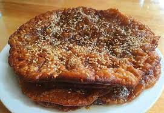

Mote Si Kyaw

Description
Mote Si Kyaw, also known as Sticky rice pancake is a sweet and crispy(optional) burmese dessert. Due to its simple and fast recipe, it's another popular choice among burmese desserts.
Ingredients
- Glutinous rice flour
- Jaggery
- Peanut (optional)
Steps
- Boil jaggery in water to get the thick syrup.
- Mix the syrup with glutinous rice flour. Add some water if needed, but the paste shouldn't be too runny.
- While frying the pancake, shower it with tiny pieces of nuts. (Peanut, almond nuts, etc...). You can also use sesame or poppy seed, according to your preference.